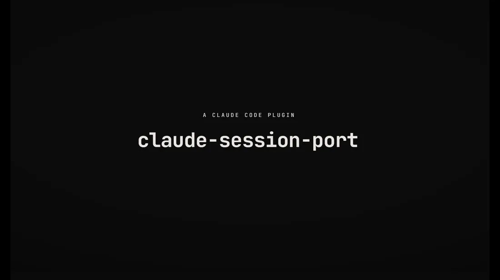

Portable single-session export for Claude Code. No cloud, no account, just a .tar.gz. Carry one conversation from one machine to another, resume it, and keep your local session folder tidy.

Want sharper detail? Download the full-resolution MP4.
/resume_title_uuid # which session is which? (maps a /resume row -> UUID)
/export_uuid <uuid> <folder> # archive one session for transport
/import_uuid <archive> # land it on the other machine so /resume finds it
/delete_uuid <uuid> [--hard] # prune a local session (native trash or permanent)Status: v0.2.0, beta. Cross-OS file mechanics pass CI on Windows, macOS, and Linux; the maintainer has run the full export -> import -> /resume round-trip on Windows. Live /resume pickup on macOS/Linux is community-confirmed. Keep the original until you have confirmed the copy resumes.
Claude Code has no built-in way to export and import a single session between machines. Sessions live on disk as ~/.claude/projects/<encoded-cwd>/<uuid>.jsonl, indexed by the project's absolute path. Copying the file by hand does not work: the destination has to resolve to the same encoded folder, with the right UUID. This tool automates that copy and the UUID bookkeeping for one session.
Most tools in this space continuously sync your whole .claude directory to a cloud bucket or git remote. This one is deliberately small.
.tar.gz; you choose the transport./resume_title_uuid maps each /resume picker row to its UUID using file size.| Tool | Scope | Infra | Cross-OS | Resumable |
|---|---|---|---|---|
| claude-session-port | move 1 session | none (a .tar.gz) | Win / mac / Linux | yes |
| claude-sync | sync everything | Cloudflare R2 | yes | yes |
| claude-code-sync | sync everything | git remote | yes | yes |
| --teleport (official) | web to local | Anthropic web | n/a | one-way |
| /export session.md (built-in) | share transcript | none | yes | no |
Windows, macOS, and Linux. Node >= 18 ships with Claude Code, so there is nothing else to install.
As a Claude Code plugin (recommended), inside Claude Code:
/plugin marketplace add TomSOhm/claude-session-port
/plugin install claude-session-port@claude-session-portManual, from a clone of the repo:
cp commands/*.md ~/.claude/commands/